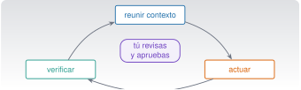

Claude Code: fundamentos y trabajo cotidiano
C4 · Vía C
Versión 0.2.0 · editada el 23/10/2026 · comprobada el 23/10/2026 · Claude Code 2.1.309 (doc.) · pendiente de revisión

Objetivos y prerrequisitos
Objetivos. Al terminar la unidad sabrás:
- explicar qué es Claude Code y en qué se diferencia de un chat: el bucle de reunir contexto, actuar y verificar;
- instalarlo, autenticarte y arrancar una sesión en un proyecto, en macOS o en Windows;
- elegir un modo de permisos y leer una regla de permisos; entender qué propone ejecutar antes de aprobarlo;
- gestionar el contexto (
/context,/compact,/clear,/resume,/rewind) y controlar el coste; - escribir un buen
CLAUDE.mdy distinguir lo persistente de lo temporal; - recuperarte de un error con Git y con los puntos de control.
Prerrequisitos. C2 (terminal, PATH, permisos) y C3 (ramas, diff, restauración). Es la unidad que une las dos.
Tiempo orientativo. 6–8 horas. Nivel: intermedio. Herramientas: Claude Code (2.1.306 instalado y 2.1.309 documentado en la redacción) y una cuenta compatible.
NotaQué se ha comprobado y qué no
Esta unidad se escribió con la documentación oficial de Claude Code (versión 2.1.309, consultada el 23-10-2026) y se contrastó con la instalación local (2.1.306): existen todas las opciones y subcomandos que se citan aquí (claude --help) y claude doctor funciona. No se ha ejecutado ninguna sesión interactiva completa durante la redacción (requiere cuenta y red), de modo que los ejemplos de conversación son ilustrativos. Los comandos, atajos y ajustes cambian de versión en versión: el registro del curso (comandos.yml) y la hoja de consulta indican la versión contra la que se verificó cada uno.
Temas de la unidad
- C4.1 Qué es Claude Code y cómo funciona: el bucle agéntico
- C4.2 Instalación, autenticación y primera sesión (macOS y Windows)
- C4.3 Permisos, modos y confirmaciones: entender lo que se propone ejecutar
- C4.4 Explorar, planificar, editar, probar y revisar
- C4.5 Contexto, sesiones y memoria:
/context,/compact,/clear,/resume,/rewind - C4.6
CLAUDE.md: instrucciones persistentes - C4.7 Coste, límites de uso y modelos
- C4.8 Terminal, IDE y otras superficies
- C4.9 Errores, recuperación y comandos que han cambiado
Teoría breve
C4.1 Qué es Claude Code y cómo funciona: el bucle agéntico
Claude Code es un agente de programación de Anthropic que trabaja sobre tus ficheros desde la terminal, un editor (VS Code, JetBrains), una aplicación de escritorio o la web. Dada una tarea, repite un bucle de tres fases que la documentación describe así: reunir contexto, actuar y verificar el resultado (How Claude Code works 2026). Para ello usa herramientas: leer y buscar ficheros, editarlos, ejecutar comandos de la shell y, si lo configuras, otras externas (MCP, C7).
How Claude Code works. 2026. Documentación de Claude Code (Anthropic), consultada el 23-10-2026. https://code.claude.com/docs/en/how-claude-code-works.
Lo que lo distingue de un chat (C1.3) es que actúa. Eso hace que importen tres cosas:
- Lo que ve: su contexto es lo que lee en tu proyecto, más tus instrucciones (
CLAUDE.md). - Lo que puede hacer: los permisos limitan qué lee, qué edita y qué ejecuta.
- Cómo compruebas el resultado: Git, el diff y las pruebas (C3).
Cada sesión empieza con un contexto nuevo: no recuerda las anteriores salvo lo que esté en CLAUDE.md, en la memoria automática o en una sesión que reanudes. Y no es infalible: puede malinterpretar, inventar una función que no existe o «arreglar» una prueba en lugar del código (C0.5 y C5).
Pon a prueba lo anterior.
¿Cuáles son las tres fases del bucle de trabajo de Claude Code, según su documentación?
- Escribir, compilar y publicar.
- Reunir contexto, actuar y verificar el resultado.
- Preguntar, esperar y responder.
- Planificar, entrenar y desplegar.
Reunir contexto (leer y buscar), actuar (editar, ejecutar) y verificar (pruebas, comprobaciones). El bucle se repite hasta terminar o hasta que te necesita.
C4.2 Instalación, autenticación y primera sesión (macOS y Windows)
Requisitos (documentación de instalación): macOS 13 o posterior; Windows 10 (1809) o posterior; 4 GB de RAM; conexión a internet. Hace falta una cuenta Pro, Max, Team, Enterprise o Console (API): el plan gratuito de la aplicación no incluye Claude Code, según la página de instalación.
curl -fsSL https://claude.ai/install.sh | bash # instalador nativo (recomendado por la documentación)
brew install --cask claude-code # alternativa con Homebrew (no se actualiza solo)
claude --version # comprobaciónirm https://claude.ai/install.ps1 | iex # instalador nativo
winget install Anthropic.ClaudeCode # alternativa con winget (no se actualiza solo)
claude --version† No se han ejecutado en la redacción (la instalación ya existía): las órdenes proceden de la documentación oficial. En Windows, Git for Windows es opcional: con él, Claude Code usa Git Bash para sus órdenes de shell; sin él, usa PowerShell. WSL solo hace falta si quieres el sandbox (que no está disponible en Windows nativo) o un entorno de herramientas Linux.
Advertencia
curl … | bash e irm … | iex
Son los comandos que C2.6 te enseñó a mirar con recelo: descargan y ejecutan un script. Aquí la fuente es el dominio oficial de Anthropic, que es lo que justifica usarlos; si prefieres leerlo antes, descarga el script a un fichero y ábrelo, o usa Homebrew / winget. Nunca uses sudo npm install -g: la documentación lo desaconseja.
Autenticación. Ejecuta claude y sigue el navegador (o claude auth login; claude auth status muestra el estado). Puedes entrar con tu cuenta de suscripción o con la clave de la API (variable ANTHROPIC_API_KEY, que es un secreto: C2.5). El instalador nativo se actualiza solo; con Homebrew o winget hay que actualizar a mano (brew upgrade claude-code, winget upgrade Anthropic.ClaudeCode); claude update actualiza en el momento. claude doctor imprime un diagnóstico de solo lectura de la instalación (comprobado con 2.1.306: versión, método de instalación, canal de actualización, resultado de la última actualización).
Primera sesión. Abre una terminal en la carpeta del proyecto (el contexto es lo que cuelga de ahí), comprueba que el árbol de Git está limpio y escribe claude. La primera vez en una carpeta pedirá que confíes en ella (trust): esa confianza permite que lea configuración del proyecto, así que solo la das en proyectos que conoces. Con claude "pregunta" arrancas con una consulta; claude -p "pregunta" responde y sale (modo no interactivo, C8).
Pon a prueba lo anterior.
Con una cuenta del plan gratuito de la aplicación Claude puedes usar Claude Code.
Falso según la documentación de instalación: hace falta Pro, Max, Team, Enterprise o una cuenta de Console (API), o un proveedor de nube compatible. Los planes cambian: consulta la página vigente.
C4.3 Permisos, modos y confirmaciones: entender lo que se propone ejecutar
Claude Code pide permiso antes de actuar, y tú decides cuánta autonomía darle con el modo de permisos (Permission modes 2026):
Permission modes. 2026. Documentación de Claude Code (Anthropic), consultada el 23-10-2026. https://code.claude.com/docs/en/permission-modes.
| Modo | Se ejecuta sin preguntar | Para qué |
|---|---|---|
default (manual) |
Solo lecturas | Revisar cada acción |
acceptEdits |
Lecturas, ediciones y órdenes básicas de ficheros (mkdir, cp, mv, rm, sed…) dentro del directorio de trabajo |
Iterar sobre código que vas a revisar |
plan |
Lecturas (propone, no edita hasta que apruebes el plan) | Explorar antes de tocar nada |
auto |
Casi todo, con un clasificador que revisa en segundo plano | Tareas largas, menos interrupciones |
dontAsk |
Solo lo que ya está permitido; lo demás se deniega | Automatización cerrada |
bypassPermissions |
Todo, sin comprobaciones | Solo contenedores o máquinas virtuales aisladas |
Se cambia con Mayús+Tab en la sesión (el ciclo habitual es default → acceptEdits → plan), con claude --permission-mode plan al arrancar, o con /plan. Pautas de este curso: plan para explorar, default o acceptEdits para trabajar; auto solo cuando entiendes la tarea y puedes revisar el diff después; bypassPermissions (y --dangerously-skip-permissions) nunca en tu equipo, y la documentación indica que ni siquiera protege .git ni .claude.
Reglas de permisos. Además del modo, puedes fijar reglas en los ajustes (/permissions las muestra):
- Tienen la forma
Herramienta(patrón):Bash(git status *),Read(./.env),Edit(./datos/**). - Se evalúan en este orden:
deny→ask→allow; gana la primera que casa, sin importar lo específica que sea (Configure permissions 2026). - El comodín
*casa cualquier cadena. Una regla de lectura o edición de ficheros (Read,Edit) se aplica a las herramientas de Claude y a órdenes de shell que reconoce (comocat). - Límites importantes: las reglas de Bash que intentan restringir argumentos (por ejemplo, «curl solo a GitHub») son frágiles: la documentación advierte de que no cubren variaciones. La defensa de fondo es el sandbox y no dar más permiso del necesario.
Configure permissions. 2026. Documentación de Claude Code (Anthropic), consultada el 23-10-2026. https://code.claude.com/docs/en/permissions.
Simulación 3. Evaluar una orden con las reglas. Este es un modelo simplificado (solo reglas Bash; véase la nota del módulo) con parte de las reglas reales de este proyecto. Prueba órdenes y observa qué regla decide.
El resultado lleva texto y símbolo, no solo color. Para probar órdenes propias, edita la lista en la celda: es un material de estudio, no un editor de reglas.
Cómo leer lo que Claude propone ejecutar. Antes de pulsar «sí», aplica las cinco preguntas de C2.10: ¿qué hace? ¿sobre qué? ¿se puede deshacer? ¿necesita privilegios? ¿ejecuta código que no he leído? En concreto:
- Lee la orden completa, incluidas las tuberías (
|), las redirecciones (>) y los&&: una orden compuesta cuenta como varias. - Desconfía de
sudo,rm -r,chmod -R,curl … | sh,git push --forcey de cualquier cosa que toque fuera del proyecto o lea credenciales. - Un «sí, y no preguntes más» crea una regla permanente para ese comando en este repositorio: úsalo solo con órdenes inocuas y específicas.
- Si no entiendes la orden, pide que te la explique o rechaza y reformula. Puedes preguntar «¿qué hace exactamente esa orden y qué pasaría si falla?»
Pon a prueba lo anterior.
Hay una regla deny para Bash(rm -rf *) y una allow para Bash(rm *). Claude propone rm -rf resultados. ¿Qué ocurre?
- Se ejecuta, porque la regla
allowes más específica. - Pregunta siempre.
- Se bloquea: las reglas se evalúan deny → ask → allow y gana la primera que casa.
- Depende del modo.
Se bloquea. El orden es deny → ask → allow; la especificidad no cambia ese orden (documentación de permisos, consultada el 23-10-2026).
--dangerously-skip-permissions es una buena forma de trabajar más rápido en tu portátil.
Falso. Desactiva las comprobaciones, incluidas las de rutas protegidas como .git; la documentación lo reserva a contenedores o máquinas virtuales aislados. En tu equipo, el modo auto o acceptEdits más una revisión del diff dan velocidad sin renunciar al control.
C4.4 Explorar, planificar, editar, probar y revisar
Un flujo que funciona (y que será la base de C5):
- Explorar (modo
plan): «Leescripts/analiza.pyy explícame qué hace, sin cambiar nada». Verifica con tu propia lectura. - Planificar: pide un plan por pasos y criterios de aceptación (qué prueba demuestra que está bien). Corrige el plan antes de aprobarlo.
- Editar: con el árbol de Git limpio y en una rama (C3), sal de
plany deja que edite. Ve fichero a fichero cuando el cambio sea grande. - Probar: que ejecute las pruebas, y ejecútalas tú también (una misma orden con el mismo resultado, no su resumen).
- Revisar:
/diffen la sesión ogit difffuera. Busca lo no pedido, pruebas debilitadas, dependencias nuevas, secretos. - Confirmar: tú haces el commit (o se lo pides con un mensaje que revisas).
Peticiones específicas. Cuanto más concreta es la petición, menos explora y más acierta: «añade validación de la entrada en leer_csv y una prueba para un fichero sin cabecera» funciona mejor que «mejora el código» (Manage costs effectively 2026). Dale cómo verificar: una prueba que debe pasar, una salida esperada.
Checkpointing. 2026. Documentación de Claude Code (Anthropic), consultada el 23-10-2026. https://code.claude.com/docs/en/checkpointing.
Detenerse a tiempo. Con Esc interrumpes; con Esc Esc o /rewind vuelves a un punto de control anterior (conversación y/o código). Los puntos de control no sustituyen a Git: no siguen los cambios hechos por órdenes de shell ni los remotos (Checkpointing 2026).
Pon a prueba lo anterior.
Claude dice que «todas las pruebas pasan». ¿Qué haces antes de confirmar?
- Confío: lo ha ejecutado él.
- Pido que lo repita con más detalle.
- Borro las pruebas que fallan.
- Ejecuto yo las pruebas y reviso el diff, incluidos los ficheros de prueba.
Lo que dice la IA no sustituye a tu comprobación: ejecuta las pruebas tú y lee el diff (¿han cambiado las pruebas para que pasen?).
C4.5 Contexto, sesiones y memoria: /context, /compact, /clear, /resume, /rewind
El contexto es todo lo que Claude «tiene delante» en la sesión: tus mensajes, lo que ha leído, la salida de las órdenes y los ficheros de instrucciones. Tiene límite, y cuanto más lleno, más cuesta cada mensaje y más se degrada la atención a lo antiguo. Herramientas:
| Comando | Qué hace |
|---|---|
/context |
Muestra qué ocupa el contexto (y qué ficheros de memoria se han cargado) |
/compact [instrucciones] |
Resume la conversación para liberar espacio; las instrucciones dicen qué conservar |
/clear |
Empieza una conversación nueva (el contexto se vacía; la sesión anterior se puede retomar con /resume) |
/resume, claude -c, claude -r |
Reanuda una sesión anterior |
/rewind |
Vuelve a un punto de control |
/usage |
Uso de tokens y de tu plan (/cost y /stats son alias) |
Pauta: una tarea, una sesión. Limpia (/clear) al cambiar de tema, y compacta con instrucciones si la tarea es larga. Lo que debe sobrevivir a todas las sesiones va en CLAUDE.md, no en el chat: tras compactar, solo se conservan los CLAUDE.md de la raíz, no las instrucciones dadas en la conversación.
C4.6 CLAUDE.md: instrucciones persistentes
CLAUDE.md es un fichero de texto en Markdown que Claude lee al empezar cada sesión. Sirve para escribir una vez lo que, si no, repetirías: cómo compilar y probar, convenciones, estructura del proyecto, «siempre haz X». Dos precisiones que la documentación subraya (How Claude remembers your project 2026):
How Claude remembers your project. 2026. Documentación de Claude Code (Anthropic), consultada el 23-10-2026. https://code.claude.com/docs/en/memory.
- Son contexto, no configuración que se imponga: Claude suele seguirlas, pero no está garantizado. Lo que debe cumplirse sí o sí (por ejemplo, «nunca tocar tal carpeta») se impone con permisos o con un hook (C7), no solo con una frase en
CLAUDE.md. - Cuanto más concretas y breves, mejor se cumplen: la documentación recomienda menos de 200 líneas por fichero y frases verificables («usa 2 espacios de sangría» mejor que «formatea bien»).
Dónde viven y en qué orden se cargan (de más general a más específico; todos se suman, no se sobrescriben):
| Alcance | Ubicación | Quién lo ve |
|---|---|---|
| Política de la organización | macOS: /Library/Application Support/ClaudeCode/CLAUDE.md · Windows: C:\Program Files\ClaudeCode\CLAUDE.md |
Toda la organización |
| Usuario (global) | ~/.claude/CLAUDE.md |
Solo tú, en todos tus proyectos |
| Proyecto | ./CLAUDE.md o ./.claude/CLAUDE.md |
El equipo, vía Git |
| Local | ./CLAUDE.local.md (añádelo a .gitignore) |
Solo tú, en este proyecto |
| Por directorio | CLAUDE.md dentro de una subcarpeta |
Se carga cuando Claude trabaja con ficheros de esa subcarpeta, no al arrancar |
Además: Claude carga los CLAUDE.md del directorio actual y de todos los superiores; puedes importar otros ficheros con @ruta/al/fichero (hasta cuatro saltos de profundidad); las reglas por tipo de fichero viven en .claude/rules/; y /init genera un CLAUDE.md inicial analizando el proyecto (si ya existe, propone mejoras). /memory abre los ficheros cargados para editarlos. Los comentarios HTML de bloque (<!-- … -->) se descartan antes de dárselos a Claude, útiles para notas de mantenimiento.
Instrucciones persistentes frente a contexto temporal.
CLAUDE.md (y reglas) |
Lo que escribes en la conversación | |
|---|---|---|
| Dura | Todas las sesiones | Solo esta sesión (y puede perderse al compactar) |
| Para | Convenciones, comandos, prohibiciones del proyecto | La tarea de hoy, un dato puntual |
| Riesgo | Se queda obsoleto y contradice a otro fichero | Se olvida |
Y además existe la memoria automática: notas que Claude escribe por sí mismo a partir de tus correcciones (se cargan las primeras 200 líneas o 25 KB); es un mecanismo distinto, que revisas y editas con /memory.
Un ejemplo original para el proyecto de la viga (23 líneas; cada regla es verificable):
# Proyecto de la viga: instrucciones para Claude Code
## Qué es
Análisis de un registro de aceleración sintético (`datos/aceleracion.csv`, 200 Hz).
## Comandos
- Pruebas: `uv run --with numpy --with pytest pytest tests` (deben pasar las 6 existentes).
- Análisis: `python3 scripts/analiza.py datos/aceleracion.csv resultados`.
## Convenciones
- Python 3.11+, funciones pequeñas con docstring y una prueba cada una.
- Unidades SI: aceleración en m/s², frecuencia en Hz, tiempo en s.
- Español de España en comentarios y mensajes.
## Reglas de trabajo
- Trabaja siempre en una rama; no hagas `git push` ni `git commit` salvo que lo pida.
- No añadas dependencias sin preguntar. No toques `datos/`.
- Antes de dar una tarea por terminada, ejecuta las pruebas y enséñame el resultado.
## Seguridad
- No leas ni escribas `.env`. Los secretos no van al repositorio.Un ejemplo real: el CLAUDE.md de este mismo repositorio (en la raíz) fija el idioma, las unidades, la plantilla de cada unidad, las reglas de datos y las órdenes que se permiten sin preguntar y las que siempre preguntan. Léelo en la práctica.
AdvertenciaErrores frecuentes
- Un
CLAUDE.mdde 500 líneas: lo que importa se diluye. Mueve lo especializado a skills o reglas por ruta (C7). - Instrucciones contradictorias en distintos ficheros: Claude puede elegir una al azar. Repásalos con
/doctor prompt-audit(existe desde Claude Code 2.1.283 según la documentación consultada). - Poner secretos en
CLAUDE.md(se versiona y se envía al modelo). - Creer que una frase en
CLAUDE.mdes una garantía: para lo crítico, usa permisos.
Pon a prueba lo anterior.
Quieres que Claude nunca lea la carpeta de datos privados. ¿Qué es lo más fiable?
- Escribir «no leas la carpeta privada» en
CLAUDE.md. - Una regla
denyde permisos (Read(...)) y, si hace falta, un hook;CLAUDE.mdpuede reforzarlo. - Pedírselo al empezar cada sesión.
- Esconder la carpeta con un nombre raro.
Las instrucciones de CLAUDE.md son contexto que Claude suele seguir, no una imposición. Lo que no puede ocurrir se bloquea con permisos (y hooks, C7). Es lo que hace este proyecto.
Un CLAUDE.md situado en una subcarpeta se carga cuando Claude trabaja con ficheros de esa subcarpeta, no necesariamente al arrancar la sesión.
Verdadero según la documentación: los de los directorios superiores se cargan al arrancar y los de subcarpetas bajo demanda.
C4.7 Coste, límites de uso y modelos
Claude Code consume tokens (C1.4). Con una suscripción, el uso cuenta contra los límites de tu plan (ventanas de cinco horas y semanales); con una clave de API, se factura por token. Para vigilarlo (Manage costs effectively 2026):
Manage costs effectively. 2026. Documentación de Claude Code (Anthropic), consultada el 23-10-2026. https://code.claude.com/docs/en/costs.
/usagemuestra el uso de la sesión y de tu plan (en una suscripción, la cifra en dólares no es tu factura)./contextenseña qué ocupa espacio;/clearentre tareas y/compactcon instrucciones lo reducen./modelcambia de modelo y/effortel nivel de razonamiento: un modelo más pequeño y un esfuerzo menor bastan para muchas tareas; mide con tus casos.- Peticiones específicas, modo
planpara no rehacer, y subagentes o hooks para filtrar salidas largas (C7). - En modo no interactivo,
--max-budget-usdy--max-turnsponen un tope (C8).
La documentación cita, como orientación, una media de unos 13 $ por persona y día activo en despliegues empresariales (y menos de 30 $ en el 90 % de los casos); varía mucho según el uso. Las sesiones largas gastan más de lo que parece porque cada mensaje reenvía el contexto. Un uso muy superior al esperado casi siempre es una sesión que nunca se limpió.
C4.8 Terminal, IDE y otras superficies
La misma funcionalidad se ofrece en la terminal (donde se documenta todo), en VS Code y JetBrains (el editor muestra los cambios propuestos como diffs y comparte el contexto de lo que tienes abierto), en la aplicación de escritorio y en la web. Elige por comodidad, pero las reglas son las mismas: permisos, diff, Git. Si trabajas con varios proyectos o tareas en paralelo, usa worktrees (C3.10).
C4.9 Errores, recuperación y comandos que han cambiado
Cuando algo sale mal, de lo menos a lo más drástico:
- Esc para detener y corregir con una instrucción concreta («no, solo en
analiza.py»). /rewindpara volver a un punto de control (conversación y/o ficheros editados por Claude).git restore/git revert(C3.8) para lo que ya está en tu repositorio. Git manda./cleary empezar de nuevo con una petición más precisa si la sesión se enredó.claude doctory, dentro de la sesión,/doctor, para problemas de instalación o de configuración.
Comandos que han cambiado o desaparecido (comprobados contra la documentación 2.1.309; si encuentras una guía antigua, desconfía):
| Lo que verás en guías antiguas | Estado actual | Qué usar |
|---|---|---|
/cost |
Existe como alias de /usage |
/usage |
/review |
Alias de la skill /code-review (no es un comando interno) |
/code-review |
/agents |
Desde la 2.1.198 solo muestra un recordatorio; ya no es un asistente | Crear el subagente pidiéndoselo a Claude o editando .claude/agents/ (C7) |
/vim |
Eliminado en la 2.1.92 | — |
.claude/commands/ (comandos personalizados) |
Fusionados con las skills; siguen funcionando | Skills (C7) |
/doctor frente a claude doctor |
Son distintos: el primero propone y puede aplicar arreglos; el segundo solo diagnostica | Úsalos según lo que necesites |
AdvertenciaEtiqueta «histórico»
Todo comando que aparezca en este curso sin estar en el registro verificado debe leerse como no verificado. El registro indica, para cada comando, la versión contra la que se comprobó.
Pon a prueba lo anterior.
Una guía antigua te dice que escribas /cost para ver el uso. ¿Qué haces?
- Lo pruebo y, si funciona, uso
/usage, que es el comando vigente (/costes un alias). - Lo descarto porque no existe.
- Desinstalo y reinstalo Claude Code.
- Pido a Claude que lo invente.
Según el registro verificado, /cost sigue funcionando como alias de /usage. Los comandos de las guías antiguas hay que contrastarlos con la documentación vigente.
Práctica guiada
Requiere cuenta · Puede generar coste (límites de plan o API; las partes sin Claude son Local gratuita). Los diálogos con Claude son ilustrativos; no se ejecutó una sesión interactiva en la redacción.
Ficha. Objetivo: arrancar Claude Code en el proyecto de la viga, entender sus permisos, escribir un CLAUDE.md y hacer un cambio pequeño controlado. Archivos: la copia del proyecto de C2/C3. Versiones: Claude Code 2.1.x, Git. Resultado esperado: una sesión en modo plan, un CLAUDE.md revisado y un diff leído antes de confirmar. Problemas frecuentes: arrancar en la carpeta equivocada; aprobar «sí, y no preguntes más» a una orden sin leerla.
- Prepara. En la copia del proyecto:
git status(limpio) ygit switch -c practica/c4. - Revisa tu instalación (solo lectura):
claude --versionyclaude doctor. Anota versión y método de instalación. - Arranca con
claude, acepta la confianza de la carpeta solo si es tu copia. Escribe/statusy/permissionsy anota el modo y las reglas. - Cambia a modo
plan(Mayús+Tab) y pide: «Lee el proyecto y resúmelo en cinco líneas; no modifiques nada». Comprueba congit statusque no ha cambiado nada. - Escribe un
CLAUDE.mden la raíz de tu copia (parte del ejemplo de C4.6 y ajústalo). Sal con/exity vuelve a arrancar; en la sesión,/contextdebe listarlo en «Memory files». - Un cambio pequeño (modo
default): «Añade un test que compruebe quermsde una señal constante es 0». Antes de aprobar cada orden, aplica las cinco preguntas; rechaza cualquier cosa que toque fuera del proyecto. - Revisa:
/diffygit diff; ejecuta tú las pruebas (uv run --with numpy --with pytest pytest tests→ debe haber 7 que pasan). - Mide el coste de la sesión con
/usagey anota los tokens. Prueba/cleary vuelve a mirar. - Léelo todo en el repositorio real: abre
CLAUDE.mdy.claude/settings.jsonde Resonancia y contesta: ¿qué órdenes se permiten sin preguntar? ¿cuáles preguntan? ¿qué se deniega y por qué?
Respuestas esperadas del paso 9 (verificadas leyendo esos ficheros el 23-10-2026): se permiten sin preguntar, entre otras, julia --project=., quarto render, git status/diff/log/show/add/commit y uv run; preguntan git push, los comandos gh que modifican GitHub, el Git destructivo (restore, reset --hard, clean, rebase…), quarto publish y añadir o quitar paquetes de Julia o Python; se deniegan la lectura y edición de la carpeta de datos privados, rm -rf y los ficheros de credenciales (.env, claves, ~/.ssh…). Motivo: mínimo privilegio; lo irreversible o lo que publica, con confirmación; lo confidencial, vetado.
Qué has aprendido: Claude Code propone y tú decides; los permisos, el diff y Git son tus controles, y CLAUDE.md es contexto, no una garantía.
«Pídeselo a Claude»
TipPrompt
Estoy empezando a usar Claude Code en un proyecto de análisis de señales (Python, pytest, datos sintéticos). Léelo en modo solo lectura y propón un CLAUDE.md de menos de 40 líneas con: qué es el proyecto, comandos de prueba y de ejecución, convenciones (unidades SI), y reglas de trabajo (rama, no hacer commit sin pedirlo, no tocar datos). Cada instrucción debe ser verificable. Marca con «?» lo que hayas tenido que suponer porque no podías comprobarlo en el proyecto. No crees ni edites ningún fichero: enséñame el texto.
Verifica.
- ¿Cada comando que cita existe y funciona? Ejecútalos tú.
- ¿Las instrucciones son verificables («usa 2 espacios») o genéricas («escribe buen código»)?
- ¿Marcó con «?» las suposiciones o presenta todo como cierto?
- ¿Mete algo que sea una garantía («nunca lo hagas») que debería ser una regla de permisos?
- ¿Respetó «no edites ningún fichero»? Comprueba con
git status.
Ejercicios
Modos. Para cada tarea elige un modo de permisos y justifícalo: a) entender un proyecto que no conoces; b) refactorizar con pruebas y revisión de diff; c) una tarea larga y bien acotada en un contenedor desechable.
NotaSoluciónplan. b)defaultoacceptEdits, con revisión del diff. c)auto(o, solo en un contenedor aislado sin red,bypassPermissions), sabiendo que el clasificador reduce pero no elimina el riesgo.
Reglas. Escribe las reglas para: permitir
git statusygit diff, preguntar antes degit push, y denegar la lectura de.env. Indica en qué orden se evaluarían paragit push.NotaSoluciónallow:Bash(git status *),Bash(git diff *);ask:Bash(git push *);deny:Read(./.env). Paragit pushse evalúa deny (no casa), luego ask (casa → pregunta).Auditoría de una propuesta. Claude propone
rm -rf ~/proyectos/viga/resultados && git add -A && git push. Analízala con las cinco preguntas y di qué aceptarías.NotaSoluciónSon tres órdenes: borrado recursivo (sin papelera; aceptable en
resultados/si la ruta es correcta, pero conviene comprobar conls),git add -A(puede añadir secretos o basura: revisagit status) ygit push(publica). Rechazaría la cadena entera y pediría cada paso por separado, revisando el diff antes delpush.CLAUDE.md. Mejora esteCLAUDE.mddefectuoso: «Escribe buen código. Sé cuidadoso. No rompas nada. Usa las mejores prácticas.»NotaSoluciónSustituir por reglas verificables: comando de pruebas, convenciones concretas, límites («no añadas dependencias sin preguntar»), y cómo comprobar el resultado. Las generalidades no cambian el comportamiento.
Contexto. Describe qué harías en una sesión de dos horas en la que Claude ha empezado a «olvidar» decisiones tempranas y el consumo se ha disparado.
NotaSolución/contextpara ver qué ocupa; guardar lo importante enCLAUDE.mdsi debe persistir;/compactcon instrucciones sobre qué conservar, o/cleary empezar una tarea nueva con un resumen escrito por ti; en el futuro, una tarea por sesión.
La doy por superada si…
- Explico el bucle de Claude Code y qué lo diferencia de un chat.
- Lo instalo y lo arranco en mi sistema, y sé comprobar versión y diagnóstico.
- Elijo un modo de permisos con criterio y leo una regla
deny/ask/allowy su orden. - Antes de aprobar una orden, aplico las cinco preguntas y rechazo las peligrosas.
- Gestiono el contexto (
/context,/compact,/clear,/resume,/rewind) y vigilo el coste con/usage. - Escribo un
CLAUDE.mdbreve y verificable y sé que no es una garantía. - Me recupero de un error con
Esc,/rewindo Git. - Distingo comandos vigentes de comandos antiguos o eliminados.
Referencias de esta unidad
Documentación oficial de Claude Code (versión 2.1.309, consultada el 23-10-2026): cómo funciona, instalación, modos de permisos, permisos, memoria y CLAUDE.md, costes y puntos de control.
Referencias
Son las mismas que aparecen en el margen, junto al texto. La lista completa del curso, con el estado de verificación de cada ficha, está en R5.
Checkpointing. 2026. Documentación de Claude Code (Anthropic), consultada el 23-10-2026. https://code.claude.com/docs/en/checkpointing.
Configure permissions. 2026. Documentación de Claude Code (Anthropic), consultada el 23-10-2026. https://code.claude.com/docs/en/permissions.
How Claude Code works. 2026. Documentación de Claude Code (Anthropic), consultada el 23-10-2026. https://code.claude.com/docs/en/how-claude-code-works.
How Claude remembers your project. 2026. Documentación de Claude Code (Anthropic), consultada el 23-10-2026. https://code.claude.com/docs/en/memory.
Manage costs effectively. 2026. Documentación de Claude Code (Anthropic), consultada el 23-10-2026. https://code.claude.com/docs/en/costs.
Permission modes. 2026. Documentación de Claude Code (Anthropic), consultada el 23-10-2026. https://code.claude.com/docs/en/permission-modes.